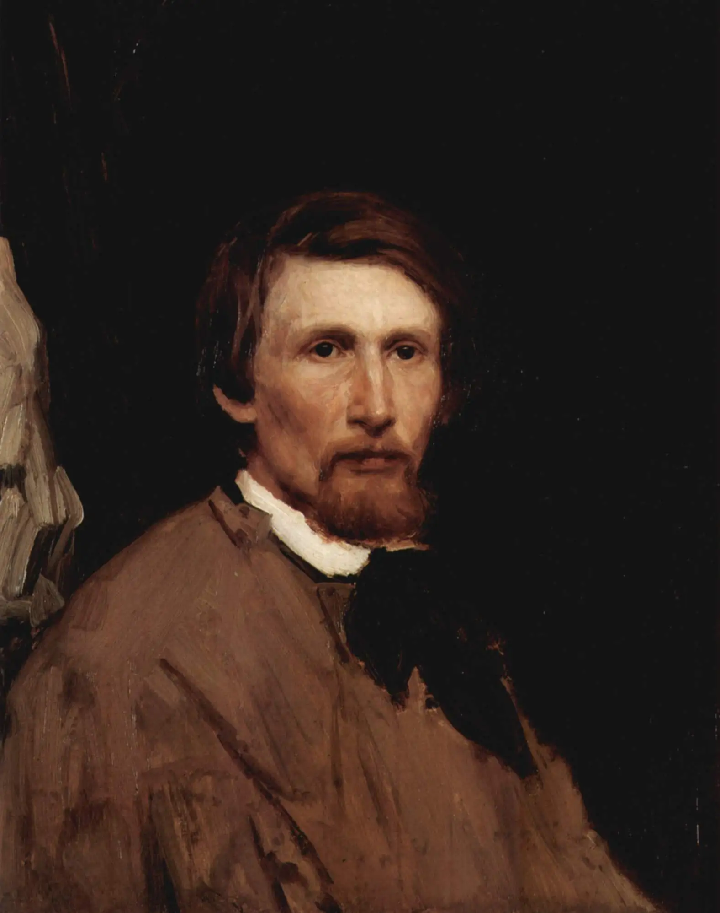
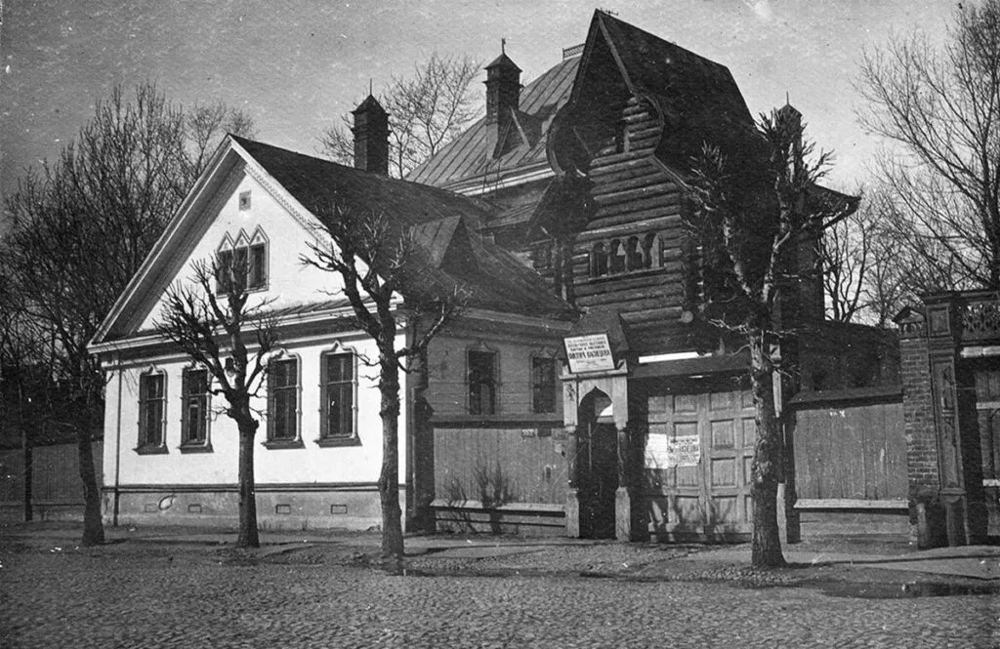
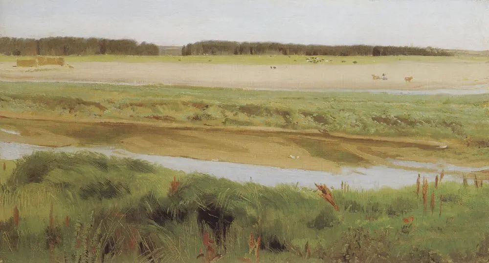
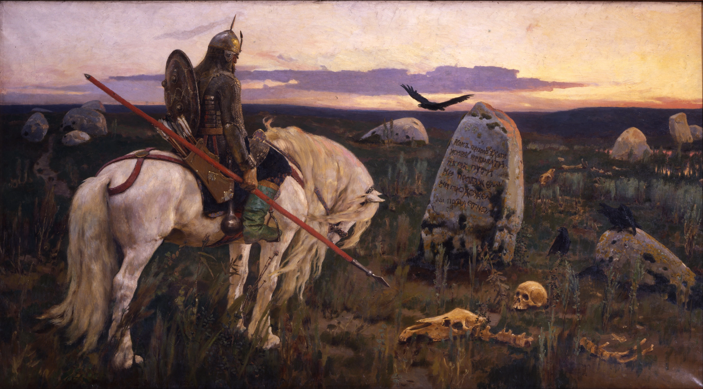
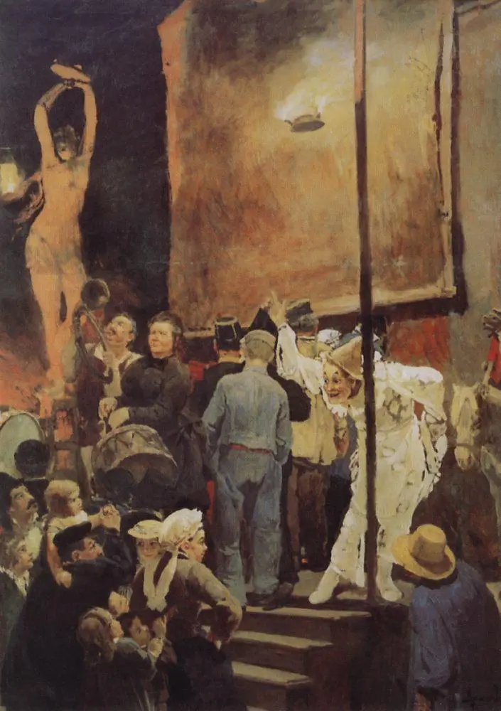

Viktor Mikhailovich Vasnetsov
Русский живописец, график, архитектор и скульптор.

Виктор Васнецов родился 15 мая 1848 года в Вятской губернии (сегодня — Кировская область) в семье священника. Родители старались дать детям разностороннее образование: читали им научные журналы, учили рисованию. Первыми работами Виктора Васнецова были пейзажи, сюжеты сельской жизни. Природа на его картинах во многом списана с вятских видов: извилистые реки, холмы, густые хвойные леса.
«Я всегда был убежден, что в жанровых и исторических картинах, статуях и вообще каком бы то ни было произведении искусства — образа, звука, слова — в сказках, песне, былине, драме и прочем сказывается весь целый облик народа, внутренний и внешний, с прошлым и настоящим, а может быть, и будущим»
-Виктор Васнецов
About life
В свободное от учёбы время Васнецов рисовал портреты горожан, делал по памяти зарисовки, помогал расписывать Вятский кафедральный собор. В 1867 году он проиллюстрировал книгу этнографа Николая Трапицина о пословицах. Позже художник опубликовал свои рисунки отдельно — в альбоме «Русские пословицы и поговорки в рисунках В.М. Васнецова». В годы учебы живописец создал первые полотна «Жница» и «Молочница».
В 1867 году Виктор Васнецов бросил семинарию и уехал в Петербург. Зимой этого года он занимался живописью в школе своего друга — художника Ивана Крамского, а спустя год поступил в Петербургскую академию художеств.
В академии Васнецов получил две малые серебряные медали за учебные работы, а через два года ему вручили Большую серебряную медаль за картину «Христос и Пилат перед народом». В это время художник рисовал иллюстрации к сказкам и литературно-педагогическим трудам Николая Столпянского. Во время жизни в Петербурге Виктор Васнецов создавал полотна бытового жанра — «Нищие певцы», «С квартиры на квартиру». В 1874 году живописец получил бронзовую медаль на Всемирной выставке в Лондоне за картины «Книжная лавка» и «Мальчик с бутылкой вина».
History

Дом мыслился не просто жильем, он должен был воплотить идею художника о соединении искусства с жизнью и создавался как произведение искусства.
В московский период художник писал картины с сюжетами из истории и сказок Древней Руси. Одно из первых полотен — «После побоища Игоря Святославича с половцами» — экспонировалось на VIII выставке передвижников. Картину купил Павел Третьяков.
Виктор Васнецов много бывал в Абрамцеве в усадьбе мецената, писал портреты членов его семьи. Окрестности Абрамцева появились и на других картинах Васнецова: березовые рощи и извилистые речки, овраги и пруды, поросшие осокой. Здесь в 1880 году художник написал «Аленушку».
Всего было создано около 400 эскизов, расписано свыше 2000 квадратных метров. Собор освятили в 1896 году в присутствии императора Николая II и его семьи. После Владимирского собора художник расписывал храмы в Петербурге, Гусь-Хрустальном, Дармштадте, Варшаве. До конца жизни Виктор Васнецов продолжал писать картины по мотивам сказок. В 1898 году он закончил полотно «Богатыри», над которым работал 25 лет.
Portfolio

Берег реки Вятки (Пейзаж на реке Вятке). Год написания 1878.

Витязь на распутье. Первый вариант картины. Был на VI Передвижной выставке 1878 года. Год написания 1878.

Балаганы в Париже. Первоначальный вариант картины «Акробаты». Год написания 1877.